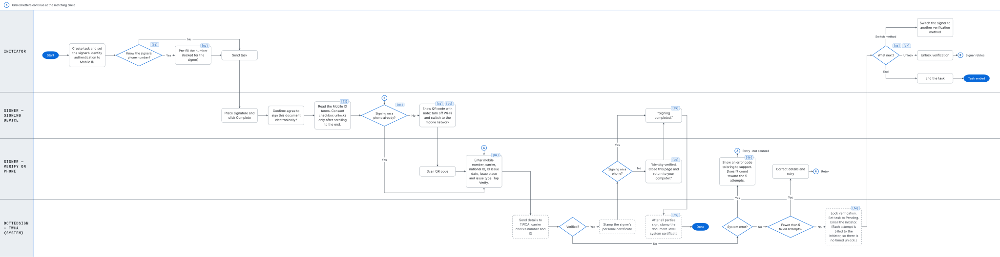
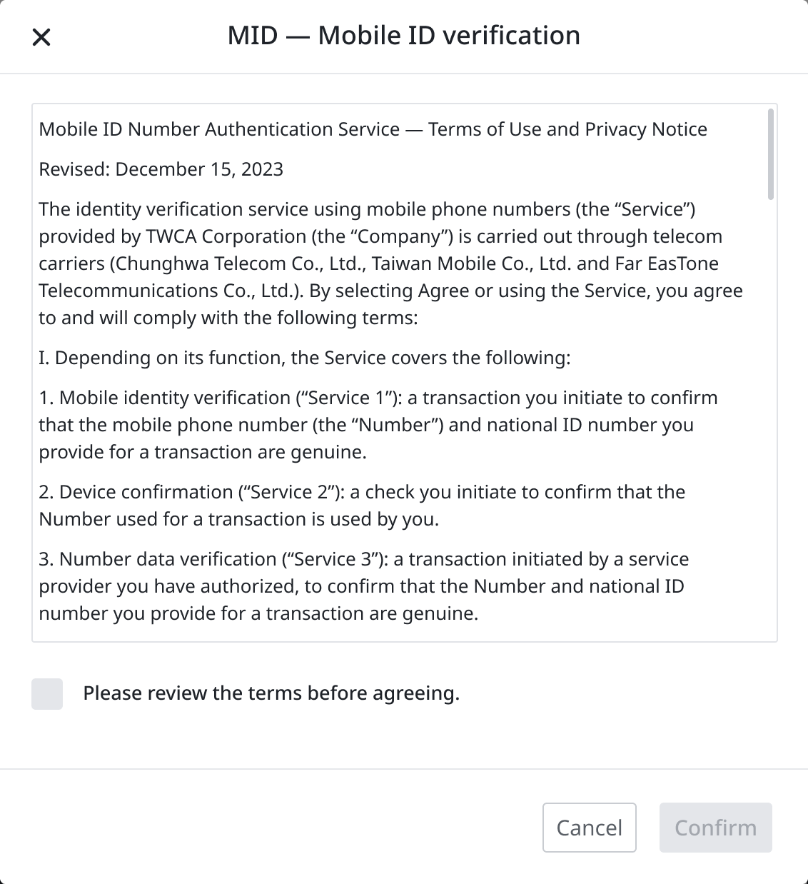
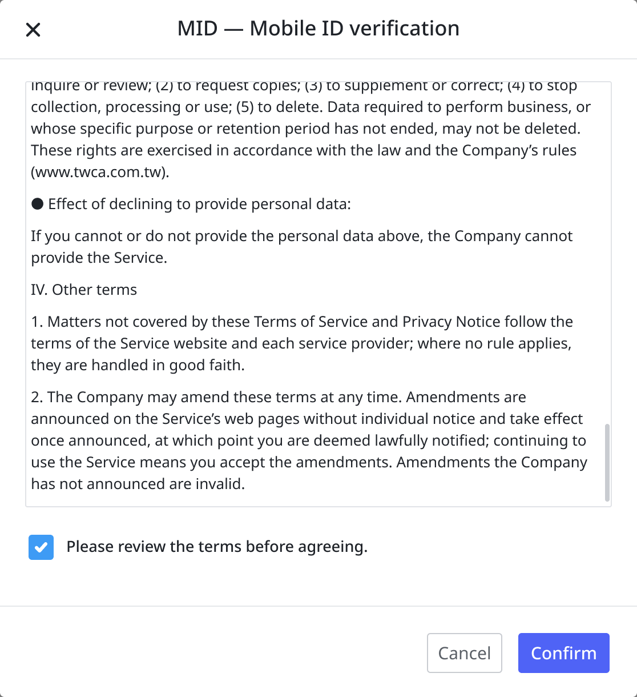
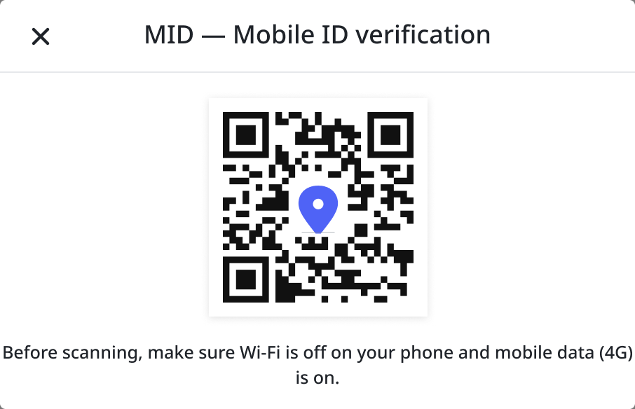
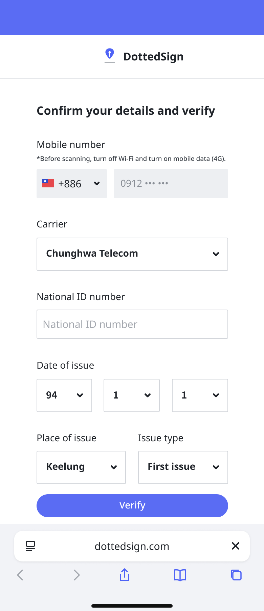
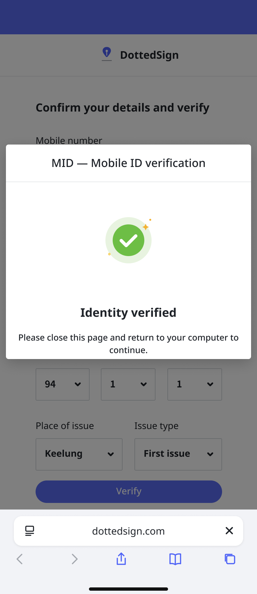
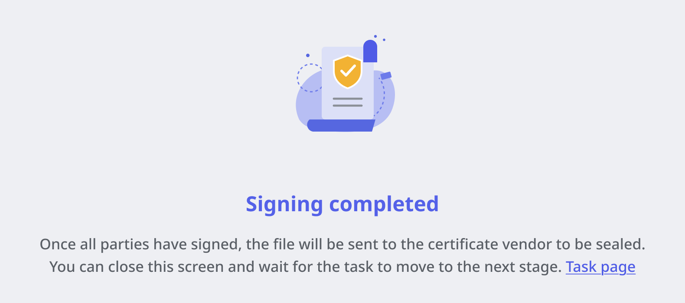

Why this existed
An electronic signature is worth exactly as much as the certainty that the right person made it. Everything else in the product — the audit trail, the tamper-proofing, the legal standing — rests on that one assumption.
An email link doesn't establish identity. It establishes access to an inbox. Kdan had a roadmap for stronger verification, and Mobile ID was the first method I designed: the signer's phone number, their SIM, and their national ID are checked against carrier records, confirming that a specific real person is holding that device.
The constraint that set the order of everything
A completed Mobile ID verification doesn't just return a yes. It causes a personal certificate to be stamped onto what that signer just signed. A stamped signature is sealed — it can't be revisited.
That single fact removed most of my design space. Verification could not happen when the signer opens the task, and it could not happen before they place their signature. Either would seal something that wasn't finished. Verification had to be the last thing that happens, right after they submit.
And it is not the only certificate on the document. Once every party has signed, the whole file goes to the certificate vendor for a second, document-level system certificate. Two layers of trust, applied at two different moments, for two different reasons: one proves who signed, the other proves the file hasn't been touched since.
There was no research that would have changed this. The work was to accept the constraint and then make sure the signer never had to feel it.
Design decisions
01Two moments, two people
Mobile ID isn't one screen. It's a requirement set by one person and satisfied by another, possibly days apart — so it lives in two places.
At task creation, the initiator marks a signer as requiring Mobile ID, and can optionally pre-fill that signer's phone number. Pre-filling tightens the requirement: only the person holding that number can complete the signature.
The strict version of this feature would make the phone number mandatory. But initiators frequently don't have it — you send a contract to a counterparty whose email you know and whose mobile number you don't. Requiring it would have made the feature unusable in exactly the external-party cases where identity matters most.
So the field is optional, and it changes what the signer meets: pre-filled and locked, or blank for them to enter. Two levels of strictness, one field, and the initiator picks based on what they actually know.
02Consent you can't click past
Before verification can start, the signer has to accept the carrier authentication terms — a legal agreement governing how their phone number and ID will be checked.
In most products that means a checkbox next to a link nobody opens. I designed it the other way: the consent checkbox stays disabled until the terms have actually been scrolled to the end. Reading isn't encouraged; it's the precondition.
It is a deliberately slower flow. In a product whose entire value is that a signature holds up later, a consent nobody could have read is not worth having.

Not scrolled — consent locked

Scrolled to the end — consent unlocked
03Move the signer to their phone without losing them
Carrier verification needs the phone. Most enterprise signing happens on a desktop. So once the terms are accepted, a QR code hands the signer across to their own device — and if they were already signing on mobile, there is no QR code at all.
The page they land on is ours. Our back end calls TWCA; every screen the signer sees belongs to DottedSign. The obvious build is to redirect to the authority's own page, and it's what most integrations do. But a redirect to an unfamiliar government-adjacent site, in the middle of signing a legal document, is precisely where a careful person stops and wonders whether they are being phished.
04Say "turn off Wi-Fi", and say it where it matters
Carrier verification only works over mobile data. On Wi-Fi it fails. This is an absurd thing to ask someone mid-signature, and it is non-negotiable — so the instruction appears twice: on the QR screen before they pick up their phone, and again on the phone itself, next to the number field.
And it never says only "turn off Wi-Fi". It says what to switch to instead — the mobile network — so the signer knows what the phone actually needs, not just what to give up. Placed before they pick up the phone, it gets fixed before verification fails, not after.

Desktop — the handoff

Phone — six fields, all of them required by the carrier
05Close the loop back to the other device
A cross-device handoff has two ends, and the second one is where people get stranded. The phone succeeds, and then… nothing, because the thing that continues is the laptop they walked away from.
So the phone doesn't just say verified. It says close this page and go back to your computer. And the desktop screen that greets them explains what happens next without them: everyone else signs, then the file goes for its document-level seal.

Phone — an instruction, not just a state

Desktop — what happens without you
06Design the failure chain, not just the happy path
Mistyped digits are the most common failure and the only recoverable one. Everything else — a number that doesn't match carrier records, a signer without Mobile ID at all — cannot be fixed by trying again.
The lock has no timer, and that was the point. Every verification attempt is billed to the initiator's account. A lock that lifted itself after a day would let a signer keep failing — and keep spending someone else's money — every day until they gave up. So after five failures, only the initiator can unlock it. The person paying for each attempt decides whether another one is worth it.
The other half is making sure they find out. Without it, a locked-out signer produces a task that silently stops moving, and the initiator discovers it days later when they chase it. So the task is held, the initiator is emailed, and they can unlock verification, switch the signer to a different method, or end the task.
07Decide what the system should not solve
Some signers don't have Mobile ID at all. I chose not to build a path for it — no in-flow fallback, no alternative-method picker at the point of failure.
If a signer can't verify this way, the resolution is a conversation with the initiator, who can switch them to a different method. An in-flow alternative would have let the signer downgrade the security level the initiator deliberately chose — which is the one thing the feature exists to prevent.
Adding a screen there would have looked more thorough and been worse.
Outcome
The feature shipped and worked. Sales reported that clients found the flow clear and easy to follow in demos — which, for a step involving a legal agreement, a QR handoff, a carrier network requirement and six identity fields, was the bar.
Adoption was low.
What I take from it
Mobile ID was a paid add-on, positioned as an upgrade available to any customer. Most customers didn't take it.
The easy read is that the market wasn't ready, and there's something to that. Plenty of users didn't feel they needed a certificate on their documents at all. Security maturity in the market genuinely lagged what the product could offer, and building ahead of that curve was a deliberate bet, not an accident.
But that framing lets the design off too easily. There was a group who needed this urgently — regulated industries, real estate, anything with a real impersonation risk. We built the right thing and then offered it to everyone equally, as a line item on a pricing page, instead of aiming it at the people whose problem it solved.
Being early to a need is a defensible strategy. It only pays off if you find the minority who have that need today. We designed the feature well and never did that second part.